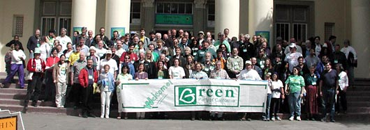
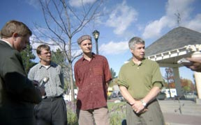
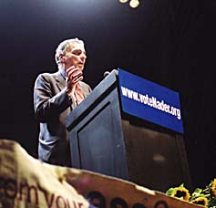
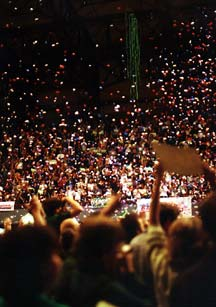
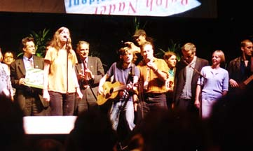

GPCA Photo Gallery
This photo gallery shows some of the historic moments of the Green Party as well as our everyday work. We'd love to post your photos! Submit additions (electronic form only, preferably JPG or GIF) to the photo gallery by sending them to submissions@cagreens.org. From the September, 2001 GPCA Plenary in San Mateo
- Jan 2003 Peace Rally (San Francisco)
- Aug 2002 GPUS National Conference Photos (Philadelphia, PA)
- Jan 2003 GPCA Plenary Photos (Santa Clara)
- Aug 2002 GPCA Gathering Photos (Ventura) [Still Looking for Pictures!]
- May 2002 GPCA Plenary Photos (Fresno)
- Jan 2002 GPCA Plenary Photos (Los Angeles)
- Sept 2001 GPCA Plenary Photos (San Mateo)
- Aug 2001 GPUS Formational Meeting Photos (Santa Barbara)
Other Photos

Historic Green Majority in Sebastopol, CA (November, 2000)
Nader Super Rally in San Francisco, CA (October, 2000)
| 
Nader Speaks |

|
| 
|
|